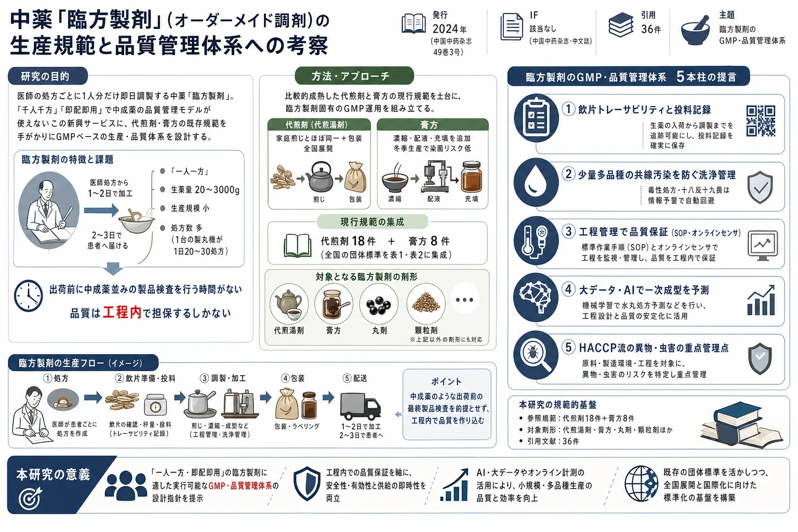

中薬「臨方製剤」（オーダーメイド調剤）の生産規範と品質管理体系への考察

<!-- 方針: ほぼ全訳＋必要に応じた補足。原文（中文・思考／総説）構成に沿って訳出。本文の[N]は原文の番号引用に対応し末尾の参考文献にリンクする。原文は考察中心で図版（写真・グラフ）は無く 表1・表2の2表が情報の中心（原本PDFをPyMuPDFで全7ページ確認、埋め込み画像0。偶数頁の描画は表の罫線）。両表を原文の全行で転記した。「> 補足:」は訳者注。 -->
書誌情報
- 原題: 中药临方制剂生产规范与质量管理体系的思考（Reflections on good manufacturing practice and quality control system of personalized traditional Chinese medicine preparations）
- 著者: 王优杰（WANG You-jie）¹²・林暁（LIN Xiao）²³・沈嵐（SHEN Lan）²³・張磊（ZHANG Lei）⁴\・洪燕龍（HONG Yan-long）²⁴\（1. 上海中医薬大学 創新中薬研究院／2. 中薬現代製剤技術教育部工程研究センター／3. 上海中医薬大学 中薬学院／4. 上海中医薬大学 上海中医健康服務協同創新センター, いずれも上海 201203, 中国）
- 掲載: 中国中药杂志（China Journal of Chinese Materia Medica）, 2024, Vol. 49, No. 3, 580–586 相当. DOI: 10.19540/j.cnki.cjcmm.20231120.301
- 助成: 国家自然科学基金（81973490）／上海市「科技創新行動計画」技術標準項目（20DZ2200900）ほか
- インパクトファクター: 該当なし（中文核心誌でJCR収載外。中薬分野の代表的学術誌）
補足: 中薬臨方製剤（临方制剂） ＝日本語に直訳すると「臨（のぞ）んで方（処方）を作る製剤」で、医師が患者ごとに出したその処方に合わせて、薬局や医療機関がその都度オーダーメイドで調製する漢方製剤を指す。工場で大量生産される既製の「中成薬」や、単味エキス顆粒を調合する「配方顆粒」とは異なり、1人分だけを即座に作るのが特徴。代表的な剤形が「代煎剤（代わりに煎じた湯液）」と「膏方（生薬を煮詰めた練り膏／シロップ状の内服剤）」で、近年は丸剤・顆粒剤などにも広がっている。日本でいえば、調剤薬局が処方ごとに即日つくる自家製剤に近い。本稿の著者らは、この新しいサービスに「工場向けのGMP（医薬品製造品質管理基準）をどう当てはめるか」を、既に普及している代煎剤・膏方の規範を手がかりに考察している。
用語の整理（訳者による前置き）
- 臨方製剤（临方制剂）＝処方ごとにその都度作るオーダーメイド漢方製剤。「一人一方」「千人千方（人ごとに処方が違う）」「臨配現用／即配即用（作ってすぐ使う）」が特徴。
- 代煎剤（代煎剂／代煎湯剤）＝患者に代わって医療機関・薬局が煎じてパック詰めする湯液。家庭での煎じ作業とほぼ同じ工程に包装を加えたもの。
- 膏方（膏方／膏剂）＝生薬の煎液を濃縮し、糖・膠などを加えて練り上げた膏状の内服剤。中国東南沿海（上海・江蘇・浙江）で冬季に服用する習慣が普及。
- GMP（good manufacturing practice）＝医薬品製造品質管理基準。原料・人員・設備・工程・包装・品質管理を体系的に規定する。
- 共線汚染（共线污染）＝同じ設備・ラインを異なる処方で使い回すことによる交差汚染。
- SOP（standard operating procedure）＝標準作業手順書。HACCP＝危害分析重要管理点（食品業界由来の予防的品質管理体系）。
- 十八反・十九畏（十八反・十九畏）＝中医で配合してはならない（または慎重を要する）生薬の組み合わせを定めた古典的な禁忌リスト。
要旨（摘要）
中薬臨方製剤は急速な発展段階に入っており、完善な生産規範と品質管理体系を確立することが、中薬臨方製剤の健全で良性の発展を保証する鍵である。本稿は、中薬臨方製剤の特徴を分析し、代煎液と膏方の現行の生産品質管理規範を参考にし、中薬臨方製剤の生産で存在・発生しうる各種の問題を考慮して、中薬臨方製剤に適した生産品質管理の方案と安全生産上の注意事項を提起し、中薬臨方製剤の生産規範と品質管理体系に参考を提供する。臨方製剤の生産規範および品質管理体系も、時代とともに進み、動的に発展すべきである。将来、臨方生産を大データ・人工知能などの現代技術と結び付け、規範化されたGMP要求のもとで、中薬臨方製剤の自動化・知能化生産を実現し、完善な品質溯源体系・オンライン管理戦略・安全管理モデルを確立することは、中薬臨方製剤の健全で良性の発展を有効に保証するだろう。
- キーワード: 中薬臨方製剤／生産規範／品質管理／知能化生産／膏方
序論
2010年の《医療機構中薬製剤の管理強化に関する意見》は、中薬臨方製剤（調剤）と医療機構が生産する中薬製剤とを明確に区分し、臨方製剤は正式に現代中医臨床医療の重要な補完となった。2016年の《中華人民共和国中医薬法》の正式公布に伴い、中医薬は新たな発展の時代に入り、2023年の国務院弁公庁「中医薬振興発展重大工程実施方案の印発に関する通知」もまた、中医薬を伝承・イノベーション・発展させることの重要性と歴史的高みを強調した[1]。国家政策の支援のもと、人々の医療ニーズの継続的な高まりと生活のテンポの加速に伴い、中薬臨方製剤も全面的な発展期を迎えた。
中薬臨方製剤に関連する専門文献量は指数関数的に増加している。上海中医薬大学の洪燕龍教授チームは、新たな時代背景のもとでの中薬臨方製剤の発展方向を国内でいち早く提起した[2]。その後、中薬臨方製剤の剤形設計[3-4]・製剤処方最適化[5]・製剤工程予測[6] から、製品品質保証[7]・特殊処方処理[8]・製品の口当たり最適化[9]、中薬臨方製剤の需要分析[10]・応用現状[11]、システム設計[12] に至るまで、いずれも関連文献の報告があり、中薬臨方製剤の研究開発が急速な発展段階に入ったことを示している。
代煎湯剤と膏方は、比較的早くから発展した臨方製剤の剤形である。代煎湯剤の工程は比較的単純で、主に家庭での中薬煎煮が煩雑で時間がかかる・煮出し方の差が大きく薬効に影響する・煮出し量が不確定・服用が不便といった問題を解決し、仕事の忙しい若者が薬を煎じる時間がない不便を大いに改善した[13]。膏方は上海・江蘇・浙江など東南沿海の省で比較的普及している[14]。近年、一部の内陸省でも冬に服用する膏方の普及が始まり、その人口は年々増加傾向にある[15]。人々の用薬品質の向上と中薬技術の進歩に伴い、臨方製剤への需要も次第に規模化・常規化へ向かっている。現在すでに十数の省市が丸剤・顆粒剤など多様な剤形の臨方製剤サービスを試み始め、一部のオンライン医療機構や薬店も臨方製剤の代加工サービスを提供でき、中薬臨方製剤はすでに一般家庭に次第に浸透し、広く歓迎されている。
臨方製剤の急速な発展は、それが抱える問題をいっそう際立たせてもいる[16]。いかにその良性の発展を導くかは、臨方製剤の研究者・生産企業・監督管理部門が向き合わねばならない問題である。本稿は、中薬臨方製剤の生産および品質管理の特徴を分析したうえで、全国各地の代煎中薬と膏方の生産規範・品質管理の現状を参考にし、研究チームの臨方製剤の生産規範・品質管理体系への考察を論述し、研究者・生産者・監督管理者に参考を提供して、中薬臨方製剤の良性の発展を促進することを期待する。
1. 中薬臨方製剤の生産および品質管理の特徴
中成薬・配方顆粒の生産過程・品質管理と比べ、中薬臨方製剤には顕著な特徴がある。
第一に、中薬臨方製剤は「一人一方」であり、「一方」の生薬量は20〜3000 g で、生産規模は小さいが、処方の変化が大きく、処方数が多い[17]。毎日、各生産ラインが数個から数十個の処方製剤の調製を完了する必要があり、たとえば上海のある臨方丸剤サービス提供メーカーでは、1台の製丸機が平均して毎日20〜30個の処方を調製する必要がある。処方と処方の間の設備清掃がとりわけ重要で、さもなければ「共線」のリスクが生じる。
第二に、中薬臨方製剤は時効性（即時性）への要求が高い。医師が処方を出した後、製剤は1〜2日で代加工を完了し、最良では2〜3日で患者の手に届くべきである。このように短い時間内では、出荷前に製品の品質検査作業を完了することができず、いかに製品品質を保証するかが、医師・患者・監督管理部門の共通の懸念となっている。
第三に、中薬臨方製剤の「千人千方」の特徴により、処方間に共通の特徴を見いだすことが難しく、過程監視でも成品検査でも、統一的な評価方法を確立しがたく、検査標準も各々異なる。中成薬や配方顆粒であれば、品質管理分析方法の確立には少なくとも1か月を要し、生産過程でもたえず完善・最適化して、ようやく特定品目に適用できる品質管理体系を形成する。しかし臨方製剤には、品質検査標準を確立する時間も条件もない。
第四に、中薬臨方製剤は1剤の使用期間が一般に2〜4週間で、続けて服用が必要なら再度代加工する必要がある。薬材のバッチ・調製工程はいずれも、同一処方の異なるバッチ間の官能（感覚的）差異を招きうるため、患者の感じ方や信頼度に影響する。いかにバッチ間差を下げ、製品品質の一致性を保証するかも、中薬臨方製剤の品質管理が直面する大きな難題である。
代煎剤・膏方を除き、中薬臨方製剤の他の剤形の現在の品質管理は、主に生産企業の自己規律に依存しており、大多数の臨方製剤は「経験的加工」[18] で、系統的な実験研究・政策法規・業界標準の指針を欠いている。中成薬と比べ、臨方製剤は時効性への要求が高く、使用周期が短いという特性をもち、生産過程の潜在的リスクを警戒せざるを得ない。臨方製剤の品質安全を保障する長期的な駆動メカニズムをいかに構築するかは、発展の初期段階で慎重に考察・研究すべきである。
2. 中薬代煎剤と膏方の生産規範および品質管理体系の現状
現在、中医臨床で比較的広く応用されている中薬臨方製剤には、中薬代煎剤と中薬膏剤（中薬膏方とも呼ぶ）があり、この2種の製剤は調製が単純である。うち代煎剤は、患者が家庭で自ら煎煮する工程と基本的に一致し、包装の工程を増やしただけで、技術難度が低く、生産設備が成熟し、自動化の程度が高いため、すでに全国範囲で応用されている。中薬膏剤は、煎煮を基礎に、濃縮・配液・充填のいくつかの生産工程を増やしたもので、剤形は依然として液体製剤であり、技術難度も高くないが、生産設備には濃縮設備・冷却室・配液設備などが加わる。調製工程の増加は生産リスクを増やしうる。しかし中薬膏剤は主に冬季に生産され、典型的な季節性をもつため、染菌のリスクは大いに下がる。2種の製剤はいずれも比較的長い応用の歴史をもち、その生産規範・品質管理体系も次第に完善・規範化されてきており、他の中薬臨方製剤の剤形が参考にする価値がある。
2.1 中薬代煎剤の生産規範および品質管理体系の現状
中薬代煎剤はその便利さから、患者に好まれている。時代の変遷と技術の進歩に伴い、中薬代煎剤の生産規範・品質管理体系もたえず更新されてきた。公開文献は20世紀80年代まで遡ることができ、当時上海で実施されていたのは上海薬材公司が制定した《煎薬操作規程》で、種類別・時間規定・水量規定の厳格な制度を実施し、薬汁を絞り切る・白芯（芯の生煮え）をなくす・薬渣（かす）から一滴も残さない、を徹底した[19]。実施の過程で、代煎中薬の薬瓶の衛生管理問題を発見し、薬瓶の洗浄消毒、木栓の消毒および消毒後の処置を強調して、薬液が微生物汚染を受けないよう保証した[20]。衛生部・国家中医薬管理局は1997年に国家レベルで《中薬煎薬室管理規範》を公布し、2009年に《医療機構中薬煎薬室管理規範》へと更新した。新規範は、医療機構の中薬煎薬室の人員資質・施設設備要求・煎薬操作方法・煎薬室の管理などについて、いっそう詳細な規定を設けた。
現在、我が国の各省市も順次、地域的な煎薬規範を発布・更新している（表1）。たとえば上海は一貫して厳格な煎薬管理規範の実施を堅持し、たえずバージョンを更新して、規範が地域発展のニーズに適合するよう保証している。浙江省義烏市はさらに時代とともに進み、2021年に《インターネット＋中薬代煎服務規範》の団体標準を発布し、インターネットを中薬代煎の管理に応用した。
表1 中薬代煎剤に関連する規範または標準（Table 1）
| 年 | 標準・規範名 | 発布単位 | 編号 |
|---|---|---|---|
| 1997 | 中薬煎薬室管理規範（廃止） | 国家中医薬管理局 | - |
| 2009 | 医療機構中薬煎薬室管理規範 | 国家中医薬管理局 | - |
| 2014 | 中薬煎薬質量管理規範（現行2022年版） | 上海中薬行業協会 | T/SHATCMI0001-2023 |
| 2015 | 浙江省中薬飲片代煎服務工作質量管理規範（試行） | 浙江省中薬質量控制中心 | 浙中薬質控〔2015〕1号 |
| 2017 | 吉林省医療機構中薬煎薬室管理弁法（試行） | 吉林省中医薬管理局 | - |
| 2019 | 中薬煎薬管理与質量控制系統建設指南 | 中国中医薬信息学会 | T/CIATCM025-2019 |
| 2021 | 広西中薬飲片代煎質量管理規範（試行） | 広西中薬薬事質控中心 | - |
| 2021 | 北京市医療機構委託中薬飲片生産経営企業提供中薬飲片代煎・配送服務規範（試行） | 北京市中医管理局 | - |
| 2021 | インターネット＋中薬代煎服務規範 | 浙江省義烏市市場監督管理局 | DB330782/T119-2021 |
| 2021 | 湖北省社会薬房中薬代煎服務質量管理規範 | 湖北省薬品監督管理局 | - |
| 2022 | 煎薬中心通用要求 | 全国製薬装備標準化技術委員会 | GB/T42282-2022 |
| 2022 | 中薬湯剤煎煮規範 | 中華中医薬学会 | T/CACM1366-2021 |
| 2022 | 零售薬店中薬代煎服務技術規範 | 仏山市順徳区医薬健康行業協会 | T/SDMH01-2022 |
| 2022 | 医療機構中薬煎薬機煎煮規範 | 広東省中医薬学会 | T/GDACM0110-2022 |
| 2022 | 河北中薬煎薬質量管理規範 | 河北省医薬行業協会 | T/HBYY0006-2022 |
| 2022 | 中薬飲片代煎服務管理規範 | 仏山市医薬保健品行業協会 | T/FPHA02-2022 |
| 2023 | 天津市薬品零售環節中薬代煎服務技術指南 | 天津市薬品監督管理局 | - |
| 2023 | 中薬飲片代煎服務規範 | 寧波市市場監督管理局 | - |
代煎の品質は主に煎薬中心（センター）のソフト・ハードの条件に影響される。国家は2022年に《煎薬中心通用要求》および煎薬の中核設備《中薬煎薬機》の国家標準を公布し、審方調剤・煎煮フロー・発薬配送・衛生安全のいずれについても詳細な規定を設けた。とりわけ、屈折率法によって湯剤の可溶性固形物を検出する新方法を提起し、中薬煎薬機の構造要求と操作規範を取り決め、煎薬製品の品質保障体系をさらに確立した。
2.2 膏方の生産規範および品質管理体系の現状
膏方の製作過程は代煎液より複雑で、工程が多く、調製時間が長く、製剤生産条件への要求も相対的に高い。生産メーカーおよび医療機構による膏方品質管理の長年の模索を通じて、膏方の品質管理の要点が次第に把握された。中華中医薬学会および複数の地方の学（協）会は、団体標準の形で膏方の関連規範・標準をそれぞれ発布した（表2）。これらは生産の基本条件・製作工程パラメータ・品質の重要属性を明確にしただけでなく、ソフト・ハードの両面からオーダーメイド膏方の加工単位の管理水準を規範化・向上させ、ある程度まで膏方の効能と安全を保障している。
表2 膏方に関連する規範または標準（Table 2）
| 年 | 標準名 | 発布単位 | 編号 |
|---|---|---|---|
| 2010 | 中医養生保健技術規範 膏方 | 中華中医薬学会 | ZYYXH/T172-2010 |
| 2017 | 上海市中薬行業定制膏方加工実施細則 | 上海市中薬行業協会 | - |
| 2021 | 嶺南膏方規範 | 広東省薬学会 | T/GDPA16-2021 |
| 2021 | 江蘇中医膏方臨床応用専家共識 | 江蘇省中医薬学会 | T/JSACM001-2021 |
| 2022 | 上海市膏方定制加工服務規範 | 上海市検験検測認証協会 | T/STIC120022-2022 |
| 2022 | 中医体質養生膏方技術指南 | 中関村健康服務産業促進会 | T/HSIPA004-2022 |
| 2023 | 中医膏方加工管理規範（意見募集稿） | 山東省中薬協会 | - |
| 2023 | 定制膏方加工質量管理規範 | 上海中薬行業協会 | T/SHATCMI0003-2023 |
大部分の管理規範は、膏方の加工場所・区域・設備などのハード面から膏方生産の基本条件を明確にしており、とりわけ染菌しやすく製品品質に影響する「涼膏区（膏を冷ます区域）」に紫外線滅菌の要求を課して、膏方の衛生と品質を確保している。加工管理部門の責任者、および各ポジションの操作人員の資質要求と職責を規定している。上海市中薬行業協会はさらに、膏方加工人員の研修・就業制度を実施して、従業員の専門技能水準を高めている。一部の管理規範は、膏方製作に用いる飲片・輔料・包装材料などの品質標準と受入・貯蔵・使用の要求、および膏方加工過程の工程フロー・操作規程・生産記録などの要求も規定し、原料から工程までの各環節で膏方の品質・効能・安全を確保している。
膏方製品の品質標準と検査方法については、団体標準ごとに異なる要求がある。《上海市中薬行業定制膏方加工実施細則》は、製品の出荷前に外観・装量差異・包装品質・不溶物を検査するよう要求し、検査方法は簡単・実行可能・迅速である。《嶺南膏方規範》は、製品の外観と不溶物の検査に加え、製品の相対密度・水分・微生物限度を検出する必要があり、含水量は15%〜30%、微生物限度は薬典要求に適合すべきと規定している。《江蘇中医膏方臨床応用専家共識》はさらに含量測定と定性鑑別を加えている。ただし微生物限度・含量測定・定性鑑別の3種の検査はいずれも時間と品種の制約を受け、主にバッチ製造される成品膏方を対象に行われ、一人一方のオーダーメイド膏方には適用しない。
工程が相対的に単純で応用の広い代煎液・膏方の生産・品質管理の現状からみると、応用過程で生じる問題・リスク、および生産設備の更新に伴い、その生産規範・品質管理体系は動的に発展し続けている。生産規範の管理の重点は次のとおりである——生産環境と建築施設を規定して異物の偶発的混入・染菌・共線汚染を予防する；設備の機能・パラメータを規定して薬材中の主要有効物質が完全に抽出されるよう保証する；生産工程を規定して生産バッチ間差を下げる；生産管理と人員の要求を規定して技術の専門性を保障し手抜きをさせない。品質管理の面はやや手薄だが、これも中薬臨方製剤の特性によるものである。中薬臨方製剤は「千人千方」「即時使用」の特徴をもち、汎用性のある検査方法を選ぶことが難しく、検査の時間窓もない。作られた製品はほぼ即座に出荷され、流通過程は時間単位で計算される。したがって臨方製剤は現在、迅速・簡便・実行可能な方法を選んで基本的な安全・品質保証を行うほかなく、その品質検査方法は中成薬の品質分析体系とはまったく異なる。
3. 臨方製剤の生産規範および品質管理体系への考察
代煎液・膏方の標準・規範要求から分かるように、現在の臨方製剤の生産規範と品質検査方法はやや粗く単純で、しかも代煎液・膏方の2剤形の生産にしか適用されない。より多くの臨方剤形の応用は、製剤の生産条件・要求をよりいっそう規範化・多様化させる。たとえば丸剤の生産は「和坨（練り合わせ）」工程の規範化要求が必要であり、顆粒剤は乾燥過程への要求を設けて時効性を保証すべきである。したがって、臨方製剤の生産規範・品質管理体系には、共通の特徴もあれば、個別の特性もある。
3.1 《薬品生産質量管理規範（GMP）》は臨方製剤生産の基礎である
薬品生産質量管理規範（GMP）は、系統的・科学的な管理規範であり、薬品生産と品質管理の基本準則である。GMPに基づき、薬品生産企業は薬品生産過程で一連の規定・要求を遵守し、生産する薬品の安全・有効を確保しなければならない。GMPは、企業が原料・人員・施設設備・生産過程・包装運輸・品質管理などの面で国家の関連法規に従って衛生品質要求を満たし、操作可能な生産規範を形成して、企業の衛生環境を改善し、生産過程に存在する問題を速やかに発見するのを助けることを要求する[21]。GMPは薬品製剤生産の全過程、および原料薬生産で成品品質に影響する重要工程に適用され、医薬企業の新設・改築・拡張の拠りどころでもある。
2004年7月1日から、我が国のすべての薬品製剤と原料薬はGMP条件下での生産を実現し、製薬生産企業は良好な生産設備・合理的な生産過程・完善な品質管理・厳格な検査システムを備え、最終製品の品質が法規要求に適合することを確保すべきである。GMPの実行は、公衆の用薬の安全・有効を保証し、医薬事業の健全な発展を促進するうえで重要な役割を果たしてきた。国家が公布した《医療機構製剤配製質量管理規範（試行）》および《中薬配方顆粒質量控制与標準制定技術要求》は、いずれも《中華人民共和国薬品管理法》の規定に基づき、GMPの基本原則を参照して制定されたものである。GMPは、中薬生産企業の参入の制約、中薬生産の安全と製品品質の確保において、巨大な役割を果たしている[22]。
臨方製剤の生産も同様にGMPの基本原則を参考にする必要がある。中薬臨方製剤も一種の薬品であり、製剤の安全性・有効性・品質可制御性を確保するため、製薬過程の厳密さと規範性を強調する。中薬臨方製剤は、原料調達から生産工程、さらに生産場所・設備まで、いずれも関連規定・標準に適合すべきである。2019年9月、国家薬品監督管理局は新たなGMP認証要求を運用開始し、生産過程の管理をますます重視するようになり[23]、中薬臨方製剤の規範化発展にいっそう有利である。たとえば、中薬臨方製剤の原料は国家薬品標準または省・自治区・直轄市の薬品標準に適合し、合法的資質をもつ供給者から調達すべきである；生産工程は処方要求と原料特性に基づいて制定し、製品の品質と安全を確保すべきである。同時に、生産過程には詳細な生産記録を設けて製品の来源と品質を溯源できるようにし；生産場所の環境条件は生産工程の要求に適合し、設備は生産ニーズを満たしGMP要求に適合して製品品質と安全性を保証できるべきである。膏方の団体標準には明確なGMP規定はないが、その生産企業はいずれもGMP規範の指針のもとで建設されており、その生産運用もGMP規定を参考にしている。
3.2 生産規範と品質管理体系の確立は中薬臨方製剤の特徴に適合すべきである
中薬臨方製剤は中成薬・医療機構製剤・配方顆粒と異なり、その生産・応用には顕著な特徴がある。臨方製剤の調製過程では、GMPの基本原則のもとで、さらにその自身の特徴に基づいて、固有の生産安全管理体系と製品品質保証体系を確立し、生産過程のリスクを下げ、製品の安全性を保障し、製品の品質水準を高めるべきである。これにより、消費者の中薬臨方製剤への信頼度・満足度を高め、中薬臨方製剤業界の発展を促進する。
3.2.1 中薬臨方製剤の特徴に基づく投料・生産溯源管理体系の確立
中医の個別化診療で出される処方は一般に7〜30日分の薬量であり、患者が一定期間服用した後は病院で再診して薬を出し直す。再診で出される処方は前回の処方と同じことがある。2回の診療でそれぞれ臨方製剤を調製する場合、同一処方の製剤は外観・味・薬量が基本的に一致すべきである。
中薬臨方製剤の原料は中薬飲片であり、飲片の品質は季節・産地・保存条件などの要因に影響されうる。中薬飲片の品質は《中国薬典》の要求に適合すべきで、要求に適合する前提のもとでは、飲片の外観・物理特性・化学特性が一定範囲で変動することが許される。ただしこの変動は、中薬臨方製剤製品の特性変化、とりわけ外観・味などの官能特徴の変化を引き起こし、患者が直観的な感覚から臨方製剤の品質に疑いを抱く原因となりうる[24]。
この問題に対応するには、まず飲片の品質にいっそう詳細な規定を設け、《中国薬典》要求に適合する基礎のうえで、飲片の来源・炮制条件・規格などをできるだけ一致させ、含量その他の検査検測指標の変動をできるだけ下げて、複数回の投料のバッチ間一致性を保証すべきである。より重要なのは、薬材の品質監視・溯源体系を確立し、患者に溯源の手段を提供することである。飲片の溯源、飲片調製・製剤調製過程の可視化を通じて、中薬臨方製剤の飲片が合格・投料が正確・調製が規範であるといった溯源の細部を示す。鄒浩ら[25] は中薬飲片流通品質溯源システムの設計方案を提起しており、中薬飲片の流通過程における情報の記録・監督・照会の能力を有効に高められる。中薬飲片の品質溯源システムを中薬臨方製剤生産システムに接続すれば、飲片から製品までワンクリックで追跡できる。各バッチの臨方製剤の投料過程についても、秤量・混合・煎煮などの操作の時間・温度・比率などの情報を含め、詳細に記録・監視し、投料過程を全面的に管理すべきである。臨方製剤の薬材・投料の記録について、定期的な品質監視・評価を行い、適切に社会に公開して、患者の不要な疑念を解消すべきである。
3.2.2 臨方製剤の処方が小さくバッチが多い特徴に基づく、共線汚染防止の清掃管理体系の確立
臨方製剤は各処方が1人分だけを短時間で使用するため生産バッチが小さく、一方で毎日生産する処方数は非常に多いため、1台の臨方製剤生産設備が毎日数十個の処方の製剤生産を担う可能性がある。これにより、異なる処方が同一の設備・工具・場所などの資源を共用することになり、適切な清掃・管理を行わなければ、容易に交差汚染を招き、製剤の品質と安全性に影響する。したがって、共線汚染防止の清掃管理体系の確立が極めて重要である。
明確な物料流通経路を制定し、異なる処方の製造過程での流通経路が分離され、交差接触を避けるよう確保すべきである。原料・輔料・包装材料などの異なる物料には、いずれも明確な流通経路が必要で、これらの経路は物料の単一方向の流れを確保し、逆流や交差流を避けるべきである。加えて、流通経路の設計は物料の貯蔵・清掃・検査などの環節を考慮し、各環節が薬品生産・品質管理の要求を満たすよう確保すべきである。
薬品生産過程では、混合設備・造粒設備・充填設備など多くの設備が共用される。異なる処方間の残留物が相互に汚染しないよう確保するため、設備は次の処方に用いる前に徹底的に清掃・消毒しなければならない。清掃・消毒は手順に厳格に従って、設備の隅々や隙間まで実施し、設備上に残留物その他の汚染物がないよう確保する。生産過程で使用する秤量カップ・撹拌棒・型など各種工具も、異なる処方間で清掃・消毒する必要がある。毒性薬材を含む処方は単独で処理し、毒性処方専門の清掃SOPを確立する。十八反・十九畏の関係が存在する処方には、情報予警（アラート）および自動的に工程を回避する方式で対処すべきである。
操作員は共線汚染のリスクを十分に認識し、合理的な服装・手袋交換・洗浄など、個人衛生と操作規範を強調して、人員の介入による交差汚染を避ける。定期的に設備の清掃・消毒効果の検証、および空気・表面の微生物の監視を行い、清掃・消毒措置の有効性を確保して、中薬臨方製剤の品質と安全性を確保する。
有効な清掃バリデーション（洗浄検証）の方案を確立することも、共線汚染防止の有効な措置である。化学薬品と比べ、中薬は化学成分が複雑で、清掃バリデーションの難度が大きい[26]。臨方製剤の毎日数十処方という生産量に対して、実行可能なバリデーション方法をいかに確立するかは、研究者・生産者が系統的に研究すべき課題である。
共線汚染防止の清掃管理体系は、設備の観点からも着手すべきである。製薬設備の設計は薬品生産・工程の要求に適合し、できるだけ清掃・消毒しやすい材料を採用して、死角や清掃しにくい部位を避けるべきである。複数の独立した作業区域を設計して、異なる工程間の交差汚染を避けることもできる。設備および再利用可能な工具については、定期的な点検・修理を行い、機能が正常で汚染がないよう確保する必要がある。
3.2.3 臨方製剤の時効性の特徴に基づく、工程管理で製品品質を保証する品質体系の確立
臨方製剤は「生産・包装終了後できるだけ速やかに患者に運送する」ことを要求するため、製作完了後、中成薬のような製品品質検査作業を行う十分な時間がない。製品の品質は生産過程の中で保証する必要があり、標準作業手順・生産監視・原料溯源・重要パラメータ予警・標準方バリデーションなどを行う。
生産過程では、どの環節の問題も製品品質の低下を招きうる。品質管理は製品の検査・評価だけでなく、生産フロー・原材料・生産環境などの監視・管理も必要とする。これらの要因の管理を通じて、潜在的問題を予防・発見し、速やかに措置を講じて解決することで、製品品質を保証できる。
SOPを制定し、全従業員がSOPを遵守するよう確保することは、製品品質を保証する重要なステップである。SOPは各操作ステップと品質管理点を詳細に規定し、異なる従業員の操作が同一の標準要求に適合するよう確保して、製品品質が製剤工程やバッチの影響を受けないようにする。同時に、SOPの実施は複雑な操作ステップを細分化・定量化し、操作人員がより速く正確に作業を完了できるようにして、作業効率を高める。
センサーなどのオンライン管理技術を活用して生産全過程の監視能力を高め、工程パラメータ・中間品の移送・生産損耗の管理・重要な物理パラメータの監視などを含め、生産過程の重要パラメータをリアルタイムで監視・データ収集し、生産状況を速やかに把握し、異常・問題を発見して速やかに是正措置を講じ、各生産段階の品質が期待要求に適合するよう確保する[27]。現代のIoTなどの技術を活用して資源を合理的に計画し適切に生産スケジューリングして、原材料・設備・人力などの資源の十分な活用と協調を確保する。先進的な生産技術・自動化設備を研究開発して、生産効率と品質の一致性を高め、人為的要因の製品品質への影響を減らす[28]。
3.2.4 臨方製剤の「一次成型」要求に基づく、生産工程の知能的最適化・予測体系の確立
中薬臨方製剤の加工工程は多岐にわたり、異なる処方は異なる理化学特性と製剤ニーズをもつ。「一次成型（一度で成型を成功させる）」を実現するには、適した製剤処方と工程パラメータを事前に知り、操作過程に相応の予測能力をもつ必要がある。これには、大データ・人工知能などの新世代の先進技術と中薬臨方製剤技術の結合が必要である。
センサーなどのオンライン管理技術で生産過程の温度・圧力・流量・粘度などの各種パラメータデータをリアルタイム収集する。次いでデータ分析・処理技術を用いて大量のデータを収集・整理・分析し、生産過程の重要要因が製品品質に及ぼす影響を把握する。たとえば楊光ら[29-30] は、レオロジー（流変学）試験ツールを用いて中薬ゲル貼付膏の成型品質の重要影響要因を評価し、ゲル貼付膏の輔料処方特性とレオロジー性質の関係を確立して、ゲル貼付膏の成型工程の指導に用いた。
大データ・人工知能などの技術を用いて、生産過程モデルと予測モデルを確立する。これらのモデルを訓練して、異なる生産パラメータ間の関係を学習・識別できるようにし、最適な生産パラメータと工程条件を予測できるようにする[31]。李雲琪ら[32-33] は、機械学習・意味解析（セマンティック分析）技術を用いて物料分類データベースを確立し、分類された物料の特性と成丸型を結び付け、多数回のシミュレーションと機械学習を通じて、予測能力の良好な「中薬生薬粉から臨方水丸を調製する生産技術予測モデル」を確立し、中薬臨方丸剤の一次成型率を大いに高めた。生産モデル・予測モデルに基づき、最適化アルゴリズムと組み合わせて、生産工程パラメータを最適化する。異なる目標・制約条件に対する最適化を通じて、最適な生産パラメータの組み合わせを見つけ、製品品質と生産効率の最大化を実現する。
知能予測体系をリアルタイム監視システムと結び付け、生産パラメータと工程条件の実際の状況をリアルタイムで監視し、予測モデルと対比・検証する[34]。速やかなフィードバックを通じて、生産パラメータと工程条件をリアルタイムで調整し、生産過程が最適な状態にあることを確保できる。生産工程最適化の知能予測体系を通じて、企業は生産過程の重要パラメータ・要因をより正確に把握し、製品品質と生産効率を高められる[35]。
3.2.5 偶発汚染の予防・虫害防除などの面での重要管理点
中薬臨方製剤に関わる原料・輔料の多くは栄養成分が高く、虫を招き菌を生じやすい化学成分を含むため、虫害管理措置の制定・執行にとりわけ注意し、定期的に点検すべきである。たとえば、潜伏・繁殖の可能性がある場所を除去し、虫害が生じやすい原料は壁・床から離して保管するなど、偶発汚染と虫害防除を確実に未然に防ぐ。食品業界の危害分析重要管理点管理体系（HACCP）[36] を参考にできる。中薬臨方製剤の生産過程で発生しうる危害の環節を識別し、適切な管理措置を講じて、関連する危害の発生を予防する。
4. 結語
中医の効能は、大きくは中薬の臨床サービスに依存している。人々の生活の質への要求が高まるにつれ、中薬の臨床サービスへの要求もたえず高まり、近年、中薬臨方製剤の需要が次第に際立ち、急速な発展段階に入った。中薬臨方製剤は「千人千方」「臨配現用」などの特徴をもち、その生産・検査がいずれも中成薬の管理モデルを参考にできないことを決定づけている。いかに臨方製剤の特徴を体現しつつ品質可制御性を保証するかは、臨方製剤の発展が直面する重要な問題である。
臨方生産技術を大データ・人工知能などの現代技術と結び付け、規範化されたGMP要求のもとで自動化・知能化生産を実現し、完善な品質溯源体系・オンライン管理戦略・安全管理モデルを確立することが、中薬臨方製剤の健全で良性の発展を有効に保証する鍵である。本稿は一連の可能な品質管理措置を提起した。抛磚引玉（つたない考えを示して優れた議論を引き出す） のつもりで、研究者・生産者・監督管理者に参考を提供し、中薬臨方製剤の良性の発展を促進することを期待する。
補足: 本稿の眼目は、「臨方製剤は“1人分を即日つくる”ため、中成薬のように“作ってから検査する”モデルが原理的に使えない——だから品質は“工程の中で”作り込むしかない」という点にある。そこで著者らは、既に規範が整った代煎剤・膏方（表1・表2）を踏み台に、①原料飲片のトレーサビリティ、②少量多品種ゆえの共線（使い回し）汚染を断つ洗浄管理（毒性処方や十八反・十九畏はシステムで自動回避）、③出荷前検査の代わりの工程内品質保証（SOP＋オンラインセンサ）、④AI・機械学習による「一度で成型を決める」予測、⑤HACCP流の異物・虫害の重点管理——という5本柱を提案する。日本の調剤現場で自家製剤や院内製剤の品質をどう担保するかを考えるうえでも示唆に富む内容である。
参考文献
原文（中文）の引用順に対応する。本文中の [N] は各項目にリンクする。
- 国务院办公厅. 关于印发中医药振兴发展重大工程实施方案的通知［EB/OL］. (2023-02-28).
- 洪燕龙, 张林, 胡晓娟, 等. 互联网与人工智能背景下的中医药诊疗服务新模式设想与研究［J］. 上海中医药大学学报, 2020, 34(6): 1.
- 王优杰, 李益萍, 沈岚, 等. 中药临方颗粒剂的特点与发展设想［J］. 中国中药杂志, 2021, 46(15): 3746.
- 张建伟, 马静雅, 刘力. 中药个体化给药口服固体制剂剂型选择与制备探讨［J］. 中医药导报, 2020, 26(12): 36.
- 张雪, 胡志强, 林晓, 等. 基于浓缩液黏度与制剂成型质量相关性的"零辅料"中药临方浓缩水丸制备研究［J］. 中国中药杂志, 2021, 46(15): 3772.
- 陈恒晋, 朱森发, 赵立杰, 等. 基于中药饮片物料分类的临方全粉末水丸制剂处方预测模型的构建研究［J］. 中国中药杂志, 2021, 46(15): 3764.
- 李益萍, 王优杰, 赵立杰, 等. 水分活度用于中药临方制剂微生物控制的应用现状及前景［J］. 上海中医药大学学报, 2022, 36(1): 85.
- 李益萍, 洪燕龙, 沈岚, 等. 挥发性成分在临方制剂中的量值传递研究: 以薄荷为例［J］. 中国中药杂志, 2021, 46(15): 3780.
- 吴飞, 夏新凤, 葛改变, 等. 基于口感改善的中药临方制剂依从性提高策略探讨［J］. 上海中医药大学学报, 2022, 36(1): 1.
- 鞠晓宇, 赵越, 关胜江, 等. 河北省中药临方制剂开展现状与需求调查［J］. 医院药学, 2022, 20(12): 75.
- 罗守萍. 中药临方制剂在综合性医院中的应用［J］. 中医药管理杂志, 2022, 30(17): 112.
- 邢丽媛, 王学成, 李远辉, 等. 中药临方制剂智慧制造系统设计与思考［J］. 世界中医药, 2023, 18(1): 112.
- 曾宪辉. 代煎服务, 为中医药业务添加引擎［J］. 中国药店, 2022(9): 70.
- 洪燕龙, 林晓. 中药临方制剂技术研究与应用［M］. 北京: 中国中医药出版社, 2023.
- 李阳. 膏滋药制剂工艺探讨［J］. 中国实用医药, 2011, 6(25): 229.
- 郭丹丹, 李茜, 路瑶, 等. 医疗机构开展临方制剂现状及探讨［J］. 中国卫生标准管理, 2023, 14(13): 144.
- 胡志强, 鲜洁晨, 楚世慈, 等. 中药临方制剂技术的发展现状及研究策略［J］. 中国中药杂志, 2019, 44(1): 28.
- 汪云伟, 侯东, 王兴灵, 等. 医疗机构中药临方制剂的研究现状及展望［J］. 亚太传统医药, 2022, 18(6): 235.
- 包光宇, 吴锦堂, 乐俊樵, 等. 创设二百年的童涵春唐国药店［J］. 中成药, 1984(4): 37.
- 殷彪. 代煎中药的药瓶必须进行认真消毒［J］. 消毒与灭菌, 1984(4): 232.
- 周春, 粟晓南. 试述中成药制药过程中的GMP管理体系建设［J］. 科学与信息化, 2021(11): 2.
- 于辉. 制药企业实施GMP下的全面质量管理方法分析［J］. 化学工程与装备, 2020(12): 193.
- 李长武, 周晓宇, 张博文, 等. 符合GMP要求的中药制剂智能生产线管控系统设计［J］. 自动化技术与应用, 2021, 40(12): 138.
- 刘星, 许敏华, 朱延涛. 医疗机构委托企业代煎中药存在的问题与管理建议［J］. 中医药管理杂志, 2019, 27(23): 224.
- 邹浩, 刘浩, 吴奇林, 等. 中药饮片流通质量追溯系统的设计与开发［J］. 电脑知识与技术, 2023(17): 134.
- 何本霞, 成立, 金菁, 等. 中药制剂清洁验证问题探讨［J］. 时珍国医国药, 2020, 31(10): 2512.
- 李波, 刘小溪, 韩东, 等. 传感器在中药生产中的应用及研究进展［J］. 中国现代中药, 2022, 24(10): 2010.
- 张志文. 自动化技术应用于中药提取生产领域的探讨［J］. 科技创新与应用, 2013, 3(8): 94.
- 杨光, 朱森发, 李文杰, 等. 基于流变学性质的辅料用量对中药凝胶贴膏成型质量影响的研究［J］. 上海中医药大学学报, 2022, 36(1): 75.
- 杨光, 朱森发, 田文秀, 等. 基于制剂原料及中间体理化性质的中药凝胶贴膏成型规律研究［J］. 中国中药杂志, 2024, 49(3): 634.
- 余雅婷, 赵立杰, 杜若飞, 等. 浅析专家系统在实现中药智能制造中的作用与地位［J］. 世界科学技术（中医药现代化）, 2020, 22(3): 843.
- 李云琪, 田文秀, 薛爱乐, 等. 基于语义分析的中药物料智能分类模型研究［J］. 中国中药杂志, 2024, 49(3): 587.
- 李云琪, 田文秀, 薛爱乐, 等. 基于中药物料语义分类的临方水丸制剂处方预测模型优化［J］. 中国中药杂志, 2024, 49(3): 596.
- 田文秀, 李文杰, 薛爱乐, 等. 中药临方制剂智能制造的研究实践与发展方向［J］. 中国中药杂志, 2024, 49(3): 571.
- 曹婷婷, 王耘. 中药智能制造理论模型的构建［J］. 中国中药杂志, 2019, 44(14): 3123.
- 于太林, 张宇婷, 乔巍, 等. HACCP体系在我国乳制品生产中的应用研究进展［J］. 粮食与油脂, 2022, 35(2): 18.